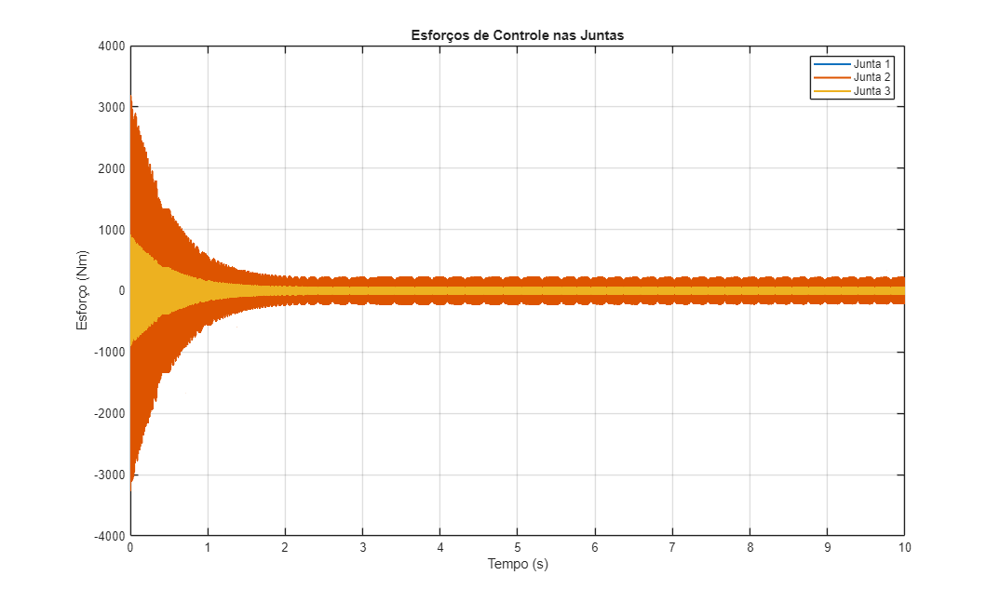
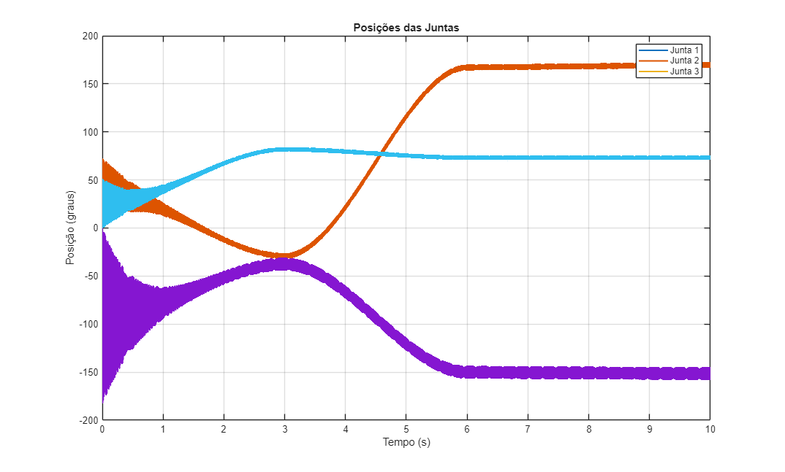

Exercicio 4 b
Simulação de um controlador PD com Feedforward para um braço planar RRR em tempo discreto.
Contents
Calling Syntax
Simular o modelo Ex4_LS3.slx no Simulink com os parâmetros definidos no script.
I/O Variables
IN Double r, Beff, Jeff, K, freq, L, m, posicao_inicial, posicao_final IN Double Array trelw, srelb IN Double T, Ts, F
Não retorna saída direta (outputs), os resultados são gerados via Simulink e gráficos.
Example
Executar o script e simular o arquivo Ex4_LS3.slx: >> EX4_LS3_code_letra_b O script define os ganhos, parâmetros e trajetórias, inicializa o Simulink e plota os esforços de controle.
Hypothesis
Manipulador planar de três juntas (RRR), controlado com lei PD + feedforward em tempo discreto (100 Hz).
Limitations
O modelo é simplificado e utiliza parâmetros aproximados para as inércias e amortecimento, obtidos em aula. Não inclui pré-compensação de distúrbio ou compensação dinâmica completa.
Version Control
1.0; Grupo 3; 2025/06/30 ; First issue.
Script
% Parâmetros r = 1/100; Beff = [50 50 50]; Jeff = [14 14 14]; K = 2750; N = 3; freq = 100; % Hz Ts = 1/freq; wn = 2*pi*freq; Kp = [(Jeff(1)*wn*wn)/K (Jeff(2)*wn*wn)/K (Jeff(3)*wn*wn)/K]; Kd = [(2*wn*Jeff(1) - Beff(1))/K (2*wn*Jeff(2) - Beff(2))/K (2*wn*Jeff(3) - Beff(3))/K]; F = 5; T = 3; L = [0.5; 0.3]; m = [4.6; 2.3; 1.0]; trelw = utoi([0.1 0.2 30.0]); srelb = utoi([0.0 0.0 0.0]); % Condições iniciais e finais uform_vec = [ 0.758 0.173 0.0; 0.6 -0.3 45.0; -0.4 0.3 120.0; ]; thpath = trajectorygenerationrrr(uform_vec, T, Ts); thdot = [diff(thpath)/Ts; zeros(1,3)]; thddot = [diff(thdot)/Ts; zeros(1,3)]; shape = [3 3 3]; n = shape(3); step_t = T*freq; t = linspace(0,(n-1)*T,(n-1)*step_t+1); Thetadotdot = timeseries(thddot, t); Thetadot = timeseries(thdot, t); Thetad = timeseries(thpath, t); % Simulação resp = sim('Ex4_LS3.slx'); % Esforço t_esforco = resp.Esforco.time; y1 = resp.Esforco.signals(1).values; y2 = resp.Esforco.signals(2).values; y3 = resp.Esforco.signals(3).values; figure; plot(t_esforco, y1, 'LineWidth', 1.5); hold on; plot(t_esforco, y2, 'LineWidth', 1.5); plot(t_esforco, y3, 'LineWidth', 1.5); hold off; xlabel('Tempo (s)'); ylabel('Esforço (Nm)'); legend('Junta 1', 'Junta 2', 'Junta 3'); title('Esforços de Controle nas Juntas'); grid on; % Posição t_Posicao = resp.Posicao.time; y4 = resp.Posicao.signals(1).values; y5 = resp.Posicao.signals(2).values; y6 = resp.Posicao.signals(3).values; figure; plot(t_Posicao, y4, 'LineWidth', 1.5); hold on; plot(t_Posicao, y5, 'LineWidth', 1.5); plot(t_Posicao, y6, 'LineWidth', 1.5); hold off; xlabel('Tempo (s)'); ylabel('Posição (graus)'); legend('Junta 1', 'Junta 2', 'Junta 3'); title('Posições das Juntas'); grid on;

